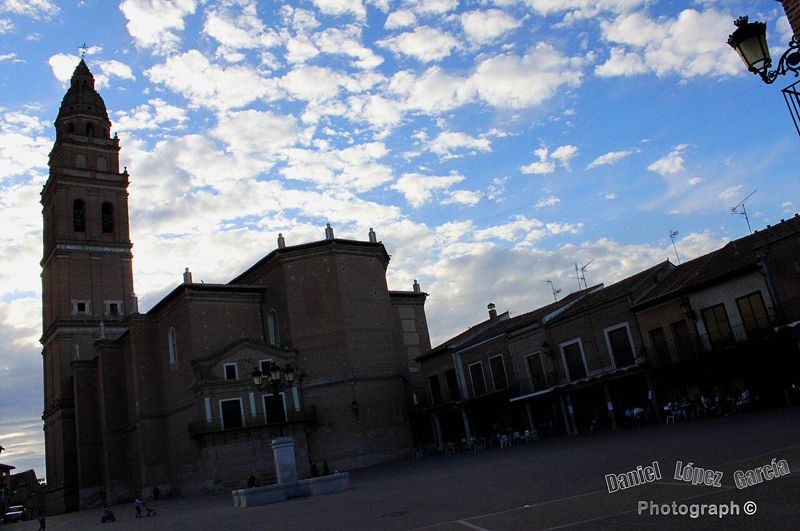

El siglo XIX: guerra, epidemias y libertades
Ejércitos de paso, el cólera, el fin del señorío, una república que duró tres días y un incendio que casi se lleva el pueblo. Un siglo agitado contado desde Alaejos.
En esta página (8 apartados · 9 min de lectura)
El siglo empezó con hambre y desigualdad. En junio de 1803 el Ayuntamiento tuvo que reglamentar el espigueo, porque eran tantos los pobres que recogían las espigas caídas en los rastrojos. Solo podían espigar los niños, los viejos y las viudas; a los hombres se les prohibía desde los trece años. Tenían que salir al toque de campana y volver antes de ponerse el sol, sin pisar los sembrados ni acercarse a las hacinas. Ese mismo mes el mayordomo de siega de doña Josefa Méndez tiró una pedrada con honda a una espigadora, Susana González, que estaba embarazada y perdió al niño. El pleito acabó con la condena del mayordomo, y también del médico y del cirujano, por no haberla atendido a tiempo (Noé León, programa de 2022).
La Guerra de la Independencia
Alaejos estaba en un cruce de caminos entre Salamanca, Valladolid, Toro y Medina, y desde las torres de sus iglesias se dominaba una gran extensión de terreno. Por eso los ejércitos de Napoleón y los aliados pasaron por la villa una y otra vez, y varias veces instalaron en ella su cuartel general (Javier Alonso Guinot, programa de 2018).
- Dic. 1808Una división del ejército británico del general John Moore está acuartelada en Alaejos. Aquí recibe Moore la noticia de que Napoleón sale de Madrid en su busca, y empieza la retirada hacia La Coruña. Las monjas franciscanas de Santa Isabel de Valladolid se refugian en la villa. Es el mes en que William Bradford dibuja el castillo.
- 1810El 14 de febrero los franceses fusilan en Medina del Campo a Julián Mangas, natural de Alaejos, junto a dos vecinos de Castrejón y Fuente el Sol. En abril el mariscal Ney reúne en Salamanca las tropas que tenía en Alba, Toro y Alaejos.
- 29 jun. 1812El mariscal Marmont, que se retira de Salamanca con más de 40.000 hombres, instala su cuartel general en Alaejos.
- 1 jul. 1812Los franceses salen deprisa y unas horas después llega el ejército de Wellington. Un oficial inglés anotó que los vecinos animaron a las tropas cuando cruzaban el pueblo; otro recordaba al salir que «anduvimos sobre un país que no producía nada más que vino». Más de 50.000 soldados acampan entre Alaejos y Nava del Rey.
- Jul. 1812Wellington tiene varias veces su cuartel general en Alaejos mientras vigila el Duero. Allí le sorprende la maniobra con la que Marmont cruza el río por Tordesillas el 16 de julio. Los dos ejércitos marchan después en paralelo por el Guareña hasta los Arapiles, donde se dio la batalla el 22 de julio.
El convento de San Francisco quedó abandonado y saqueado, y en la iglesia de Santa María, decía Madoz, quedaban pocos vasos sagrados «por haber sido robados los más preciosos por el ejército de Napoleón». La guerra acabó también con la Real Sociedad Caritativo-Económica y sus fábricas.
Alaejos tuvo además sus personajes en la guerra. El brigadier Manuel Nava Campomanes (1770–1842), nacido en Alaejos, hizo una larga carrera militar y fue herido en 1810. Teresa Calvo atendió a heridos y prisioneros en Madrid, y al acabar la guerra un grupo de militares le dio las gracias públicamente en el Diario de Madrid.
Constitución, carlistas y libertades
La Constitución de Cádiz de 1812 se juró en Alaejos con entusiasmo, y bastó que se anunciara la vuelta de Fernando VII en 1814 para que se la denigrara en la misma plaza (Noé León, programa de 2019). Las Cortes de Cádiz habían abolido los señoríos, y en Alaejos los derechos del duque desaparecieron hacia 1837.
La división provincial de 1833 llevó Alaejos a la provincia de Valladolid, y en 1833–1834 se eligió a Nava del Rey como cabeza de partido judicial, lo que «no sentó nada bien en Alaejos» y avivó la rivalidad. En el verano de 1837, durante la primera guerra carlista, hubo levantamientos carlistas en Toro, en Alaejos y en los pueblos de la Tierra de Medina. Uno de aquellos oficiales carlistas, el asturiano Feliciano Muñiz Costales, se casó con una alaejana, Eustaquia Vadillo, y llegó a ser alcalde de Alaejos en 1843 por el partido carlista (Javier Alonso Guinot, programa de 2023).
La desamortización de Mendizábal se notó en Alaejos sobre todo entre 1841 y 1844: salieron a subasta casas, pajares, bodegas y tierras pequeñas de las parroquias, del cabildo de Salamanca y de otras instituciones eclesiásticas, que compraron vecinos de la villa (Almudena Ojeda Torrero, programa de 2019). Madoz cifra lo desamortizado en el término en 430 obradas, rematadas en 155.100 reales.
El cólera de 1834
El 29 de agosto de 1834 murió María Ángela García Astudillo, la primera víctima oficial del cólera en Alaejos. Los vecinos habían tapiado el pueblo para que no entraran forasteros, pero la enfermedad llegó igual. El médico enviado desde Medina, Pedro Alcántara de Guzmán, culpó a las aguas estancadas del lavajo del Lugar, donde hoy está la plaza de Hernández Morejón; el verdadero foco era seguramente el pozo público de al lado, en el que acababan las inmundicias de las calles. Sangraba a los enfermos, les ponía hielo y, como no había sanguijuelas, ventosas.
No se sabe cuántos murieron del cólera. La Gaceta de Madrid dio 42 muertos solo entre el 17 y el 21 de septiembre, y aquel año falleció el 10 % de la población, que tardó cuatro años en recuperarse. Murieron más mujeres que hombres, 156 por cada 100, porque eran ellas las que lavaban, cocinaban y cuidaban a los enfermos (José Luis Pérez Muñoz, programa de 2011).
La villa hacia 1845, según Madoz
El Diccionario geográfico-estadístico-histórico de Pascual Madoz, publicado entre 1845 y 1850, dejó un retrato detallado de la villa (extracto de Azucena Hernández Amez, programa de 1991):
| Población | 804 vecinos y 3.255 habitantes: 672 propietarios, 376 jornaleros, 62 artesanos, 29 fabricantes de paños, curtidos y lienzos, 14 eclesiásticos, 6 abogados y 56 mendigos, entre otros |
|---|---|
| Casas | 860, de piso bajo, con bodegas; calles empedradas y una plaza cuadrada con soportales |
| Escuelas | Dos de niños, con 150 alumnos, y dos de niñas, con 112 |
| Cosechas | Trigo, 60.000 fanegas; cebada, 30.000; centeno, 8.000; garbanzos, 3.500; vino, 50.000 cántaros. Se exportaba grano a Santander, Portugal y Madrid y garbanzos a Valladolid, Madrid y Zaragoza |
| Industria | 20 telares de lienzos y paños, una tahona y dos molinos de chocolate que abastecían a Ciudad Rodrigo, Arévalo y Valladolid |
| Agua | Dos pozos: el nuevo, con aguas que «exhalan una fetidez insoportable», y el viejo, junto al castillo, de buenas aguas |
| Correo | Tres días a la semana, con estafeta propia |
Una república de tres días
La Revolución de 1868 y la Constitución de 1869, que traía el sufragio universal masculino y la libertad de cultos, fueron bien recibidas en Alaejos. Todavía lo recuerda la lápida de mármol que hay en el frontón del Ayuntamiento, bajo el reloj: «Constitución democrática. Año 1869».



Cuando Amadeo de Saboya abdicó, el 11 de febrero de 1873, el comité republicano de Alaejos no esperó. Al día siguiente los vecinos constituyeron un Consejo Democrático Federal presidido por Manuel Puertas, con Isaac García Mangas de vicepresidente, Bernardo Puertas y Julián Carracedo de vocales y Genaro Cafranga de secretario. Pidieron al Ayuntamiento y al juez que entregaran sus documentos, sus insignias y las armas, y publicaron bandos con los derechos que traía la República: la seguridad personal, la libertad de conciencia y de cultos, de expresión y de reunión. El corresponsal de El Norte de Castilla contó que todo se hizo «en medio del mayor orden» y «sin ofender».
El 15 de febrero llegó una orden del capitán general de Castilla la Vieja: las juntas republicanas debían devolver la autoridad a quienes la tenían antes. El consejo obedeció, delante del alcalde Pedro Santana. Había durado tres días (Adelio Castaño, programa de 1986).
Faroles y el fuego de las eras
El jueves 17 de noviembre de 1887 los alaejanos salieron a la calle al anochecer para ver encendidos los sesenta faroles de petróleo que había comprado el Ayuntamiento, siendo alcalde Florencio Pérez Rodríguez. Los hizo el hojalatero Bonifacio Gabián Alonso, a 15,08 pesetas cada uno con su palomilla, y llegaron a ser al menos 81 (José Luis Pérez Muñoz, programa de 2012).
En agosto de 1881 un incendio arrasó las eras, con el grano de toda la cosecha recién trillado. Una carta fechada en Alaejos el 19 de agosto, a las cuatro y media de la tarde, describía «una inmensa hoguera» de un kilómetro, empujada por un viento del oeste huracanado. Al día siguiente el corresponsal se alegraba de que el pueblo no hubiera ardido: el viento llevó las llamas a lo largo de la ronda sin dar tiempo a que prendieran las casas. El ministro de la Gobernación mandó 5.000 pesetas del fondo de calamidades. Noé León se pregunta si de aquel fuego viene el dicho de los de Nava: «Alaejos se quema, / la Nava llora, / porque no se ha quemado / antes de ahora».
El fin de siglo
Alaejos llegó al final del siglo con algo más de 3.500 habitantes. Le faltaba el tren: llegó a Nava del Rey en 1864 y no a Alaejos, y esa espina marcaría las primeras décadas del siglo XX. Muchos jóvenes que no tenían las 1.500 pesetas para librarse del servicio fueron a la guerra de Cuba. Isidoro Hernández Nieto contó la de su bisabuelo, Andrés Hernández Manjarrés, nacido en la calle Lucas Martín en 1872, que sirvió en las ambulancias de Sanidad Militar y volvió (programa de 2018). Los que tuvieron la suerte de regresar, escribe, venían enfermos y «casi irreconocibles».
Para seguir leyendo
- En la biblioteca de los programas: Javier Alonso Guinot, «La guerra de la Independencia en Alaejos» (2018); Mario García Guerras, «Wellington en Alaejos» (2014); José Luis Pérez Muñoz, «La epidemia de cólera de 1834» (2011); Javier Alonso Guinot, «Apuntes sobre el estado de la sanidad en Alaejos en el siglo XIX» (2020); José Ojeda Nieto, «Expósitos y huérfanos: ¿niños queridos, niños no deseados?» (2009), sobre los 120 niños abandonados en la parroquia de Santa María en el siglo XIX.
- Miguel Ángel García García, 1812, Wellington en Valladolid (2009), disponible en la Biblioteca Municipal de Alaejos.
- Pascual Madoz, Diccionario geográfico-estadístico-histórico de España y sus posesiones de Ultramar, tomo I (Madrid, 1845), voz «Alaejos».
Cómo citar esta página
Amigos de Alaejos, «Siglo XIX: guerra, epidemias y libertades», https://www.amigosdealaejos.org/historia-del-pueblo/el-siglo-xix/ (revisión del 15/11/2026).